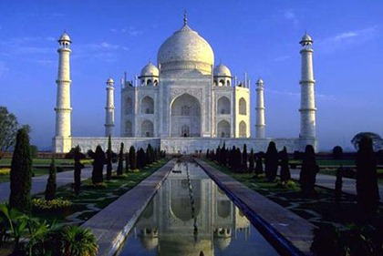
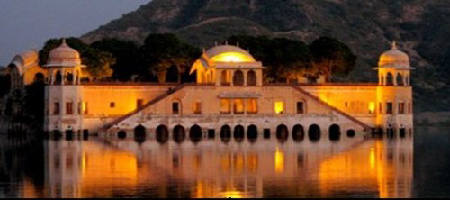

One Stop Destination to know the Top 3 tourist places in India !
Tajmahal
Agra’s TajMahal is one of the most famous buildings in the world, the mausoleum of Shah Jahan’s favorite wife, Mumtaz Mahal. It is one of the New Seven Wonders of the world, and one of three World Heritage Sites in Agra.
Completed in 1653, the Taj Mahal was built by the Mughal king Shah Jahan as the final resting place for his beloved wife, Mumtaz Mahal.
Udaipur
Jaipur is also popularly known as the Pink City, is the capital of the Indian state of Rajasthan. Jaipur is a very famous tourist and education destination in India.
Lots of people flock to Jaipur to view the various forts and monuments in Jaipur which reflect its glorious past. Tourism is a significant part of Jaipur’s economy. Some of the world’s best hotels are located here.
Beaches
Goa is Famous for its pristine beaches, infact 90% of all the tourism in Goa happens only for its beautiful beaches in Coastal Areas. Goa has two main tourist seasons: winter and summer.
In the winter time, tourists from abroad (mainly Europe) come to Goa to enjoy the splendid climate. In the summertime (which, in Goa, is the rainy season), tourists from across India come to spend the holidays.
For more details click here..!